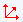

Letztes Update: 19.09.2018
Automatische Skalierung in der X- oder Y-Dimension deaktivieren:
Wenn Sie an dieser Stelle auf die Schaltfläche Neu skalieren  klicken, wird eine Warnung angezeigt, ob der zuvor festgelegte Neuskalierungsmodus überschrieben werden soll oder nicht. Klicken Sie auf die Schaltfläche Nein, um die manuell neu skalierte Achse nicht auf einen vorherigen Bereich zurückzusetzen. Eine dem Layer hinzugefügte oder aus ihm entfernte Zeichnung erzwingt keine automatische Neuskalierung.
Sie können fortfahren, die Achse manuell mit Hilfe von Achsenskalierung vergrößernneu zu skalieren. Jedes Mal, wenn Sie das Hilfsmittel Achsenskalierung vergrößern verwenden, legen Sie neue Werte für Von und Bis fest. Diese werden dann die neuen "Basislinien"werte für die Schaltfläche Neu skalieren . Jede Operation von Achsenskalierung vergrößern wird aufgezeichnet und Sie können den vorherigen Achsenskalierungsbereich durch einmaligen Klicken auf Achsenskalierung verkleinern wiederherstellen. Sie können zum anfänglichen Skalierungsbereich Von und Bis zurückkehren, indem Sie mehrmals auf die Schaltfläche Achsenkalierung verkleinern klicken und die Operationen von Achsenskalierung vergrößern rückgängig machen.
Jede Neuskalierung der X- oder Y-Achse verhindern (auch bei Verwendung des Hilfsmittels Achsenskalierung vergrößern)
Seit Origin 9.1 können Sie die Systemvariable @nrm festlegen, so dass ein fester Skalierungsbereich geblockt ist, auch bei Verwendung des Hilfsmittels Achsenskalierung vergrößern. Wenn @nrm = 0 (Standard), verhält sich die Skalierung wie oben beschrieben. Wenn @nrm = 1, funktioniert das Hilfsmittel Achsenskalierung vergrößern, um die Achse manuell neu zu skalieren, nicht.
Hinweis: Weitere Informationen zur Neuskalierung der Diagrammachsen finden Sie unter Anzeigebereich der Diagrammachsen festlegen.
Es ist auch eine Symbolleiste Axis Rescale Plus im Dateiaustausch von OriginLab verfügbar, mit der Sie die X- oder Y-Achsen durch Klick auf eine Schaltfläche neu skalieren können. Interessierte Anwender können das kostenfreie Hilfsmittel von dieser Seite herunterladen.
Schlüsselwörter: zoomen, neu skalieren, Achse von, Achse bis, manuelle Neuskalierung, Achsenskalierung, Skalierungsbereich, Dialog Achsen, Achsenskalierung vergrößern, Achsenskalierung verkleinern